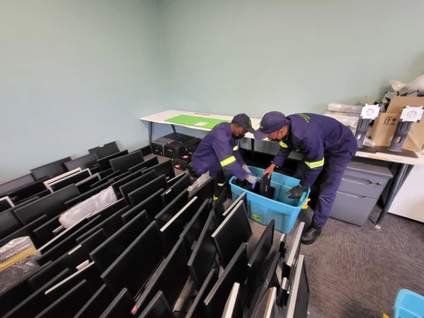
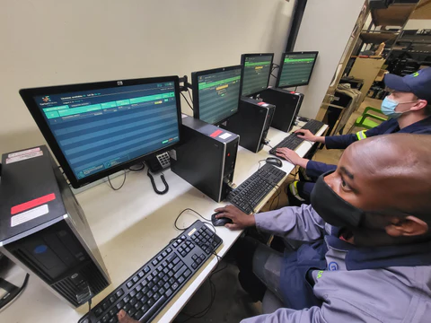

TECH MATE (Online Store) provides used IT equipment at affordable rates. We go right across the country to collect used IT equipment that is then remarketed to computer resellers and the public at affordable rates.
Refurbished IT Assets. We have qualified technicians that thoroughly examine all the equipment that we received, diagnostics are run all components, failing components are replaced, software is reloaded and then the equipment is sent to our quality control section for further testing. Once the equipment passes quality control it is cleaned & packaged then it is ready to be sold in our store
Our team. Behind every good business is a dedicated and passionate Team. TECH MATE is committed to providing South Africa with affordable IT hardware. Client can visit us at our depot in Centurion, Gauteng to make their purchase. If we are out of reach for you, we offer Free Shipping Nationwide.